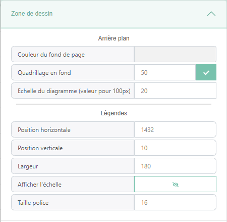
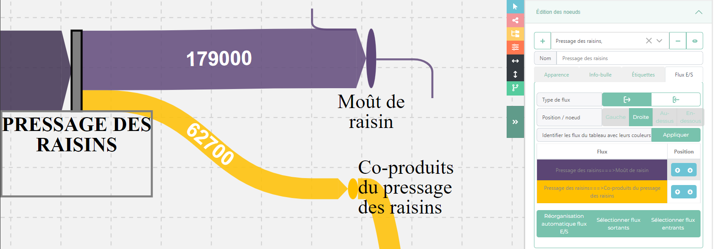
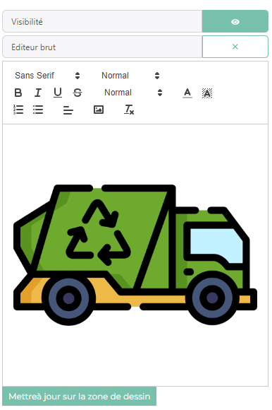
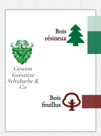
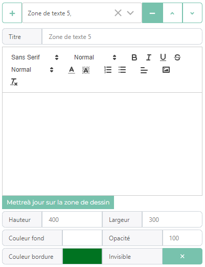

OpenSankey
Zone de dessin
La Zone de dessin est onglet du menu de configuration permettant de gérer des caractèristiques global de la zone de dessin.

L’onglet contient 2 sous-parties : L’arrière plan et la légende.
Dans Arrière plan les différents paramètres modifiables sont :
La couleur de fond: Permet de modifier la couleur de fond du sankey
Taille des carrés du quadrillage de fond et Grille visible: Permet de choisir la taille des carrés du grillage de fond de la zone de sankey. Ce grillage aide lorsque l’on veut aligner les différents élements du diagramme.
L’échelle: Permet de reduire ou augumenter l’échelle du diagramme et ainsi modifier l’épaisseur des flux
Dans Légendes les différents paramètres modifiables sont :
Position horizontal: Permet de modifier la position horizontal de la légende par rapport au coin en haut à gauche de la zone de dessin
Position vertical: Permet de modifier la position vertical de la légende par rapport au coin en haut à gauche de la zone de dessin
Largeur: Permet de choisir la largeur de la légende, si le nom d’une étiquette affiché est plus grand que la largeur de la légende alors le nom sea coupé et remis à la ligne.
Afficher l’échelle: Permet d’afficher une barre servant échelle que l’on peut déplacer pour estimer la valeur d’un flux
Taille de la police: Permet de modifier la taille de la police de la légende
Edition noeuds
L’onglet d’édition permet de modifier les paramètres des noeuds du diagramme. Cet onglet contient une partie supérieur qui permet de sélectionner, créer,supprimer et modifier des noeuds. Ensuite, après avoir sélectionner des noeuds, il possible de modifier des paramètres plus spécifiques regroupé dans des sous-onglets:
Apparence
Par défault les noeuds ont un style par défaut qui décrit leur apparence, ont peut modifier le style des noeuds la barre de navigation en haut de l’application : Edition > Styles > Editer le style des noeuds. Dans le menu de configuration, l’onglet apparence permet de surcharger le style (la valeur des attributs ne proviennet plus du style associé au noeud mais du noeud lui-même).
Apparence:
Dans cet sous-partie, nous pouvons modifier des paramètres sur l’apparence des noeuds tel que :
La visibilité de sa forme
Sa couleur
Si ca couleur reste quand une étiquette est sélectionné
Sa forme (soit une ellipse soit un rectangle)
Sa largeur et hauteur minimum, car la taille d’un noeud peut augumenter selon les flux entrant et sortant
Labels
Dans cette sous-partie, nous pouvons mdoifier des paramètres liés aux labels des noeuds tel que :
Sa visibilité
Si il est de couleur blanc ou non (utilé si le label est placé sur le noeud)
Si on affiche un fond de label pour qu’il soit + visible si il est par dessus d’autres éléments du sankey
Sa position vertical par rapport au noeud
Sa position horizontal par rapport au noeud
La police de caractère (Gras,Majuscule,Italique,Famille)
La taille de la police
La longueur des labels, si les labels des noeuds sont trop long il est possible de faire des retour à la ligne
Labels de valeur
Afficher la valeur des noeuds, affiche le maximum entre la somme des liens entrants et la somme des liens sortants
La position vertical de la valeur par rapport au noeud
La position horizontal de la valeur par rapport au noeud
La taille de la police de la valeur
Étiquettes
Cet onglet permet d’associer les noeuds sélectionnés à des étiquettes de noeud définis dans le menu Étiquettes des noeuds. Un noeud peut être associé à plusieurs étiquettes d’un même groupe, pour voir les noeuds celon leurs étiquettes aller dans la barre de navigation Filtres > Noeuds puis cliquer sur le bouton switch pour appliquer la couleur des étiquettes du groupe d’étiquette aux noeud.
Info-bulle
Dans cet onglet on gère le contenue le l’info-bulle qui s’affiche lorsque l’on survol les noeuds tous en ayant les la touche shift pressé.
Position flux e/s
Dans cet onglet qui n’apparait que si l’on sélectionne qu’un seul noeud, on gère la position des flux entrant sortant permettant de mieux les organiser Il est composé d’une partie avec des sélecteurs et d’une partie avec un tableau
Les sélecteurs permettent spécifié si l’on veux organiser les liens entrant ou sortant et de quel côté. Il y a aussi un boutnon pour coloré les lignes du tableau pour mieux pour voir identifier les liens du diagramme
Ensuite le tableau affiche les liens répondant à ces critères et avec la colone position nous pouvons modifier la position des flux attachés aux noeuds

Edition des étiquettes de noeuds
Edition flux
L’onglet d’édition permet de modifier les paramètres des flux du diagramme. Cet onglet contient une partie supérieur qui permet de sélectionner, créer,supprimer et modifier des noeuds, et d’une partie inférieur qui, après avoir sélectionner des flux, permet de modifier des paramètres plus spécifiques regroupés dans des sous-onglets:
Parmis les paramètres généraux modifiables des flux il y a : * Leur source/cible * Inverser la source/cible * Déplacer des liens par dessus/dessous les autres
Les paramètres spécifiques regroupé par catégories sont :
Données
Cet onglet permet d’attribuer une valeur aux flux.
Les flux peuvent avoir des étiquettes de données qui correspondent à des filtres.
Nous pouvons y renseigner la valeur pour ces filtres
Nous pouvons afficher la valeur de ces flux de manière scientifique ou non
Nous pouvons choisir d’afficher un texte au lieu de la valeur
Apparence
Par défault les flux ont un style par défaut qui décrit leur apparence, ont peut modifier le style des flux la barre de navigation en haut de l’application : Edition > Styles > Editer le style des flux. Dans le menu de configuration, l’onglet apparence permet de surcharger le style (la valeur des attributs ne proviennet plus du style associé au flux mais du flux lui-même).
Le style associé au flux et la possibilité de supprimer les surcharges des variables d’apparence
Apparence
Cette sous-partie gère des paramètres d’apparence des flux tel que :
Sa couleur
Son opacité
- L’orientation du flux :
Horiz-Horiz : Le flux part du noeud source à l’horizontal et arrive au noeud cible à l’horizontal
Vert-Vert : Le flux part du noeud source à la vertical et arrive au noeud cible à la vertical
Vert-Horiz : Le flux part du noeud source à la vertical et arrive au noeud cible à l’horizontal
Horiz-Vert : Le flux part du noeud source à l’horizontal et arrive au noeud cible à la vertical
Position du centre du flux, en pourcent (0%= début du flux à côté du noeud source, 100%= à la fin du flux près du noeud cible)
Ecart entre les poignées
- Type de courbe:
ca peut être un flux avec des traits doits ou courbé
avoir une flêche pour connaitre le sens du flux
Être en mode recyclage donnant une forme au flux pour montrer un retour en arrière dans le diagramme
La tension de la courbure si l’option est sélectionné
L”épaisseur de la flêche
Label
Cet sous-partie gère les paramètres liés aux labels des flux tel que :
Sa visibilité
La visibilité de l’unité du flux
Le nom de l”unité du flux (si elle visible)
Afficher le label du flux en notation scientifique
Choisir le nombre de signes significatifs (si l’on affiche le label en notation scientifique)
Afficher le label avec un nombre de décimale fixe
Choisir le nombre de décimale (si l’on affiche le label avec un nombre de décimale fixe)
La couleur du label
La police du label (famille,taille)
Alginer le texte avec le chemin du flux (suit la courbure du flux au lieu de rester horizontal)
Position du texte par rapport au flux (au début du flux, au milieux du flux ou à la fin du flux) et (au dessus du flux, au milieux du flux ou en dessous du flux)
L’option de positionner le label à la souris, détaché du flux
Info-bulle
Dans cet onglet on gère le contenue le l’info-bulle qui s’affiche lorsque l’on survol les flux tous en ayant les la touche shift pressé.
Edition des étiquettes de flux
Edition des étiquettes de données
Options OpenSankey+
Edition noeuds
Icon
Dans cet onglet, on gère l’insertion d’icones dans les noeuds. Au préalable il faut avoir charger une liste d’icones provenant d’icomoon dans le menu préférence. Les différents paramètres de cet onglet sont :
Sa visibilité
L”icon que l’on veut afficher
Sa couleur
Son ratio : sa taille par rapport au noeud
Images
Dans cet onglet, on gère l’insertion d’image et du html dans les noeuds. Cette onglet est souvent utilisé pour l’insertion d’image dans les noeuds (d’où son nom) via l’éditeur wysiwyg (what you see is what you get)

Les différents paramètres de cet onglet sont :
La visibilité de l”image
Transformer l’éditeur wysiwyg en champs de texte brut pour écrire du html brut est être plus précis dans ce que l’on fait.
Zone de textes
Dans cet onglet on gère les zone de textes que l’on peut placer où l’on veut. On peut aussi les utlisé pour repésenter des groupes d’élements sur le diagramme.

Les paramètres modifiables des zones de textes sont :

Son Titre
Un éditeur de texte avec des options de formatage de texte intégré (couleur,taille police,…)
Un bonton pour mettre à jour les zone de textes avec ce qui il y a dans l’éditeur
La hauteur de la zone de texte
La largeur de la zone de texte
La couleur de fond de la zone de texte
L’opacité de la couleur de fond
La couleur de la bordure
Si la bordure est transparente
Vues (Storytelling)
Les vues sont d’autres diagrammes de sankey présent dans les données, elles sont généralement une copie des données principales avec quelques variables modifiées pour visualiser le sankey sous un autre angle. La création de vue ce fait soit via le raccourcis clavier Ctrl+X soit dans le menu de navigation